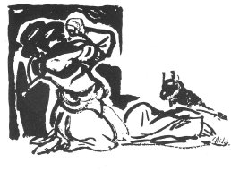

KUDUZUN OĞLU
MEHMET ÇAVUŞUN AĞIDI
Kadirlide, 1872 yılında ölen Zaptiye Çavuşu Kuduzun Oğlu Mehmet Çavuş için baldızı Fatma Hatun şu ağıdı yakmıştır.
Aşağıdan gelen yolcu
Doğru söle başın uçu
Ağamı ölmüş diyollar
Ne dutuyo sefil bacı
Ağ gonağının içinde
Parlardı doğan ay gimi
Girer ordunun içinde
Gürlerdi aslan beğ gimi
Gadanı alayım baba
İçerimde var bir çaba
Doğru habar verin bana
Gaşlar gara gözler söbe
Altında göbelek gırı
Çavışlar içinde manşır
Çavışlığı çok sınmışlar
Sadırağzamlık yakışır
Ağam çarşıya çıkışın
Alem selemliğe durur
Her analar doğuramaz
Sadakaya altın verir
Sırtında sırmalı salta
Bacım emeciğin heçe
Ağam Adanadan gelir
Gır at başlık silke silke
İşde felek gırdı beli
Söyleddi söylemez dili
Ağama nazar eylemiş
Adanad'oturan vali
Başın uçu Başın için.
Gimi Gibi.
İçerimde var bir çaba İçimde bir dert, çok heyecan var.
Göbelek gırı Göbelek kır atı. Demir kıra benzer atlara bir de göbelek kırı denir. Güneyde mantara göbelek derler.
Çoksınmak Çoksunmak. Azımsamak gibi.
Söbe Beyzi, oval.
Kadasını almak Gelen belayı, başındaki bütün belayı kendine almak.